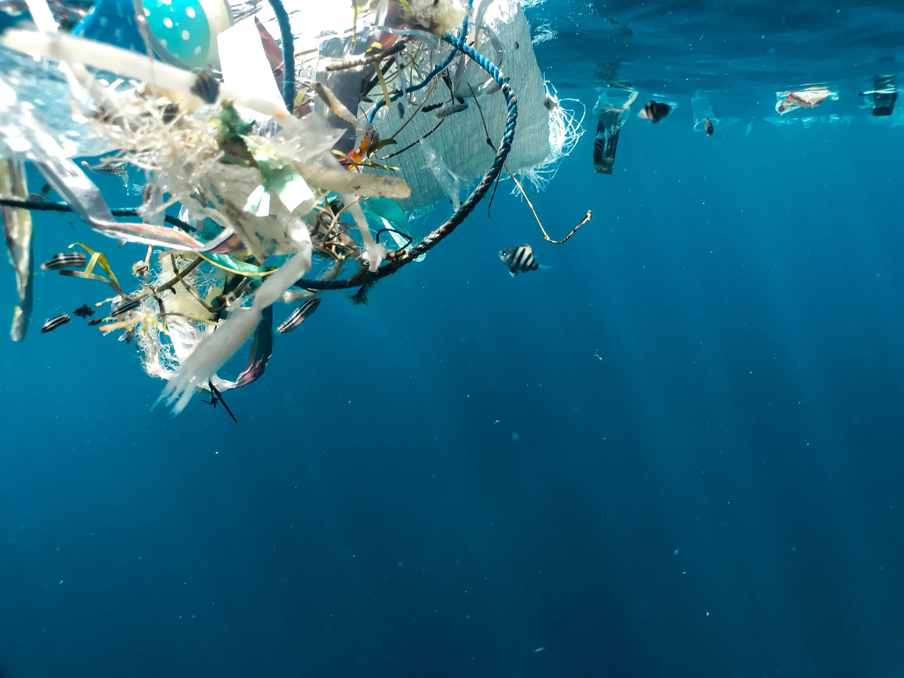
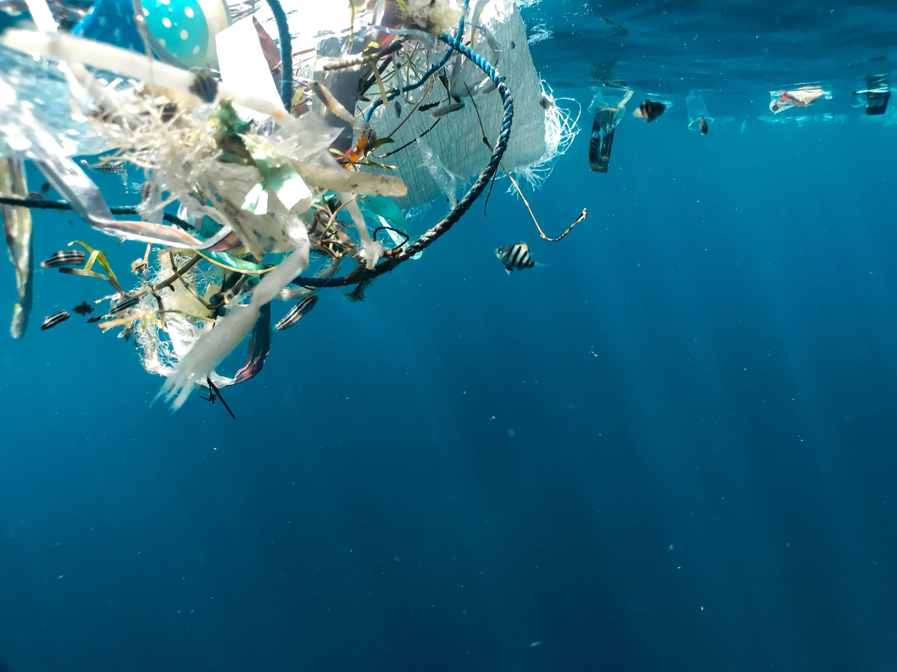

I LOVE IMAGERY


 


Images should be minimalistic yet descriptive, either minimalistic with a main focal point or have a pattern like composition. They should be high quality wth natural lighting and inobtrusive to the eye. Subject matter will consist of recycling, trash, and evironment related imagery, and will be used sparingly within the app.
I LOVE ICONS
Icons are from the IconPark TwoTone package from Iconify. They are two tone with a thicker outline to maintin visibility and minimalism. The softened feel also works well with our illustration style. The rounded corners stay consistent with our overall design language, while providing a playfulness that is not overwhelmingly childish. The large number of icons available in this package is useful for any applications needed.